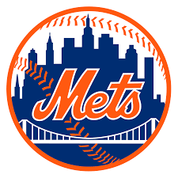

New York Mets
New York, NY

Product Engineer, Baseball Systems
Nov 2025 - PresentBaseball Operations Associate, Performance Technology
Jan 2025 - Oct 2025- Led a 6-month rebuild of the org performance planner, designing backend database and workout assignment workflows for the front-office internal web portal—used daily by major league and MiLB performance staff and 80+ players during offseason training; org-wide rollout ongoing.
- Led development of an internal app platform (Okta, GCP CI/CD, BigQuery/PostgreSQL/GCS) enabling analysts and coaches to build and deploy sandboxed tools for front-office and player-development workflows.
- Partnered with the Head of Major League Strategy to build a side-by-side video analysis tool—in daily use by the Major League Strategy team, saving an estimated 10–20 hours/week vs. manual review.
- Built automated per-series pitching analysis end-to-end (React, Cloud Functions) with skeleton overlays and biomechanical diff reports for Major League Strategy and advance scouts before every series.
- Architected org-wide biomechanics skeleton pipeline (GCP, PostgreSQL, Cloud Tasks) powering daily skeleton generation and hitting/pitching report tools from player development through front-office analysis.